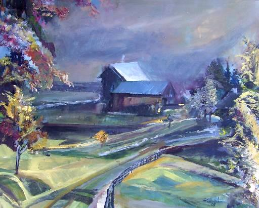

¡Nuevo! ÓLEO Y ESPACIO
ÓLEO Y ESPACIO
Autor: Raúl Lelli (Córdoba, Argentina) |
|---|
La vieja casona parece detenida en el tiempo, suspendida en el espacio, como si flotara en una densa bruma de soledades y misterios. Desde lejos, muy lejos, parece escucharse una vieja canción y espero que esa música llegue en algún momento, pero me doy cuenta que es imposible, pues no se puede avanzar en el futuro y hoy ya es ayer, pero no aún mañana. |
Un poema se dibuja en mis labios y la tinta fina de un trazo lleno de amor, va dibujando las piedras de un camino a recorrer y que me llevará hasta la puerta principal de aquella mansión de madera.  "A la vuelta" Pintura de Graciela María Casartelli
|
Anterior
Volver
EL SAPO Y EL POETA
El joven se encontraba sentado a un costado del arroyo y esperaba ansioso el arribo del momento mágico con el cuaderno y el lápiz en la mano y en el alma un tropel de
sentimientos
nuevos que se deshojaban como una flor que entrega sus pétalos al ciclo de la vida queriendo ingresar al mar de las palabras para hacerse decir de hombre
y de mujer enamorados.
En un bolso llevaba un termo lleno de café, también una manta y un paquete de galletas dulces, pues servirían de ayuda ya que no sabía a que hora era la llegada
de la musa
inspiradora,
pero el tiempo era lo de menos, ya que era parte de lo que debía ser invertido; su corazón quería expresar su amor por escrito con las rimas de
la pasión a
su joven prometida y
la noche calurosa comenzaba a cerrarse.
En el firmamento, aparecieron las primeras luces plateadas como tucos lejanos en la altura y el murmuro del agua ejecutó la nueva melodía de la noche, una más en la
página de la
luna;
y los chistidos alternados de una lechuza daban ritmo a las notas musicales.
En aquel lugar del bosque, una increíble cantidad de ojos invisibles aparecieron ante el advenimiento intruso del poeta, que comenzó a dibujar letras en cada renglón,
como si un
director de orquesta digitara una batalla de amor y poesía.
La noche acontecía, se desplazaba por el firmamento y los segundos displicentes se dirigían al infinito, en busca de los dioses, mientras su corazón ya transitaba por los
jardines de un
edén donde se encontraban las flores de pétalos de letras.
De repente, un ¡croack! grave sonó del otro lado del cauce y allí estaba don Sapo, sentado en sus patas traseras sobre una piedra oscura de granito.
Vestía de frack y lucía en la garganta un moño negro hermoso y también una galera charolada y un pitillo con boquilla; y dirigiéndose al muchacho dijo con una voz
gruesa y
educada: - ¡buenas noches, joven poeta!, tal parece que hay un corazón en llamas en busca de la musa del amor, para decirle a esta agraciada que,
¿hay quien desea desposarla? –
hizo silencio y tomando la boquilla desde la punta, la colocó entre los dedos de una mano sacudiéndola en busca que la ceniza se desprenda
; luego, con el humo del tabaco dibujó
en el aire un corazón precioso y con la brasa haciendo un despliegue de artesano, le asestó la flecha de Cupido
atravesándolo de punta a punta.
"El sapo y el poeta"- Imagen diseñada especialmente para esta historia, por Josefina Algar (España)
|
Al volar por el aire la humeante escultura cristalina, una murga de grillos hicieron coro con sus ¡vivas! y las ranas de la charca aplaudían, pues la presencia del amor El murmullo algodonado de la brisa fue el anuncio para que aquel joven de la noche abriera su corazón a la naciente poesía y un enjambre de luciérnagas junqueras se acomodaran El mozo sobrepasado por la realidad de su amor y esa increíble vivencia, le agradeció a Don Sapo la pregunta y le dijo con palabras muy sencillas que a Don Sapo se acomodó al lado del poeta y mientras el amor se encargaba de la rima, una melodía de ensueño por obra y gracia de los duendes, le animó a hacer de la palabra, una |
|---|
Algunos autores atrevidos, mendaces o copiones, citan en fábulas apócrifas de la existencia de duendes, grillos y también de sapos cantores, pero no cuentan porque no saben,
de porqué,
el poeta enamorado trajo a su amada hasta ese mundo, donde el Sapo reina y cada tanto, una boda celebra.
-FIN -
Este relato es un adelanto de mi próximo libro "NARRANDEANDO"
| Soy un hombre de letras, amo la poesía y adoro la prosa narrativa. Mi debilidad radica en narrar cuentos, relatos e historias breves.
Tengo el placer de presidir como Miembro Fundador la Asociación Cultural ABRAPALABRA y enorgullecerme de cada amigo que la compone.
De todos los premios, menciones y distinciones que me honran y que son muchos e importantes, prefiero destacar y agradecerle a la vida que me ha dado la dicha de tener
una esposa maravillosa y de vivir y trabajar de lo que más me gusta. He cumplido con todos los preceptos, he plantado varias docenas de árboles, tuve tres hijos, y ya voy por el nieto número siete, nueve libros editados y uno próximo
a nacer en el mes de Mayo.(2010) ¿Que más puedo pedir? Raúl Lelli |
|---|